Сучасні когнітивні технології
Людина, машина і нова епоха мислення
Навчальний курс для курсантів · 5 модулів · 19 занять · 38 годин
Почати навчання →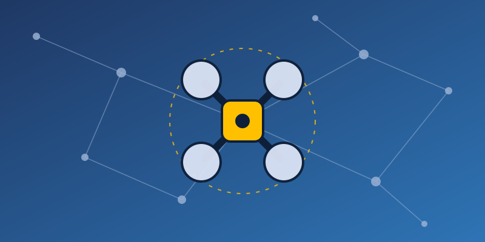
Звернення до курсанта
Ви тримаєте в руках навчальний посібник з дисципліни «Сучасні когнітивні технології». Сьогодні оператор безпілотної системи, аналітик чи командир щодня працює зі штучним інтелектом. ШІ супроводжує ціль на екрані, розпізнає об'єкти на відео, перекладає перехоплені повідомлення, допомагає планувати та звітувати. Водночас противник використовує ті самі технології: для обману, радіоелектронної боротьби, діпфейків і психологічного тиску.
Мета курсу — щоб ви розуміли ці технології, уміли ефективно ними користуватися і не ставали їхньою жертвою.
Програма курсу, правила роботи з ШІ та система оцінювання →
Модуль 1. Основи когнітивних технологій
Мета модуля: сформувати базове розуміння того, що таке когнітивні технології, як працює людське мислення і як навчаються машини.
Обсяг: 6 годин (3 заняття).
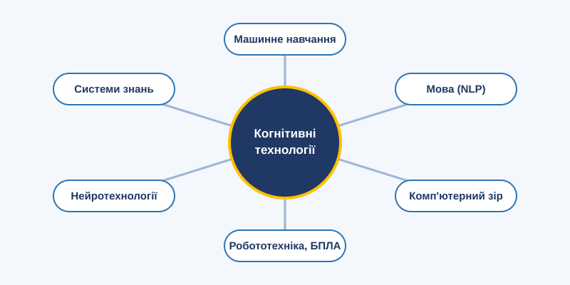
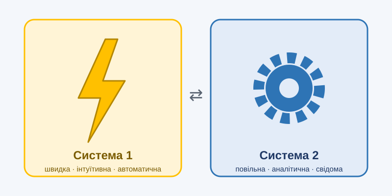
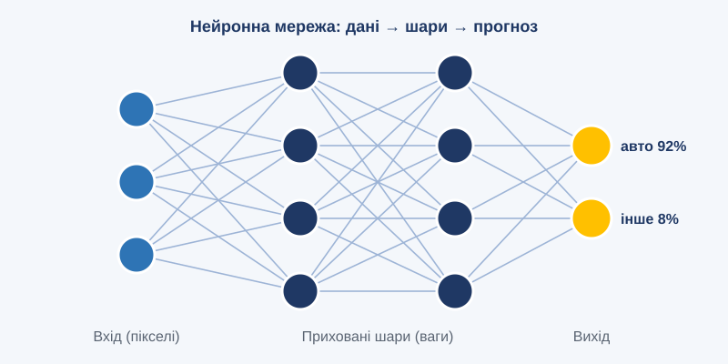
Модуль 2. Ключові технології
Мета модуля: ознайомити курсантів з принципами роботи, можливостями та обмеженнями основних когнітивних технологій і сформувати практичні навички роботи з ними.
Обсяг: 12 годин (6 занять).
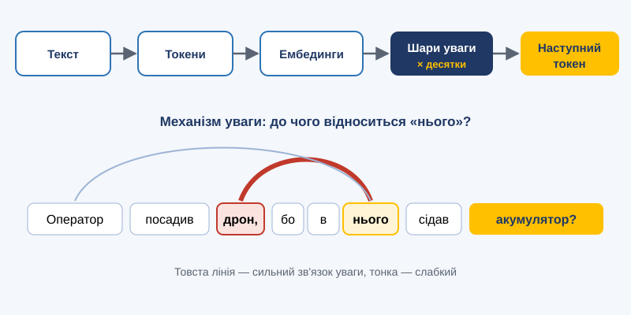
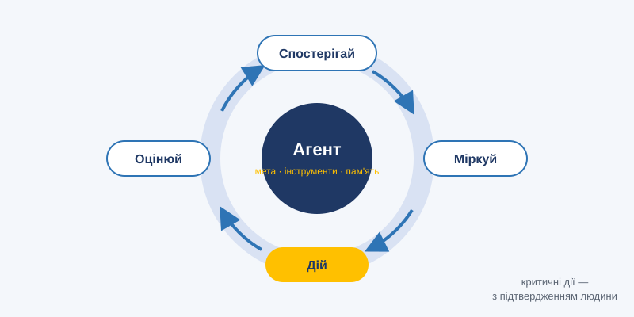
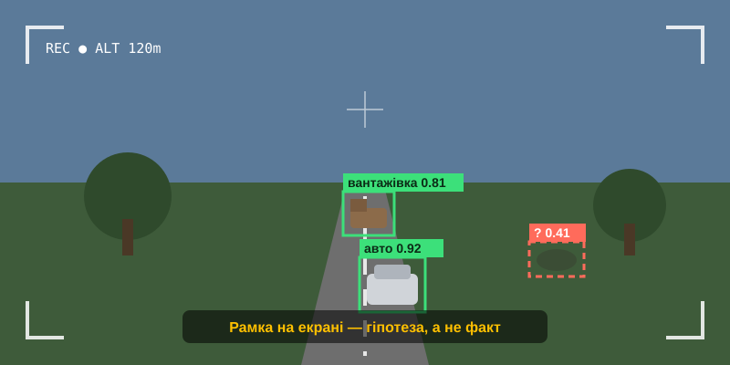
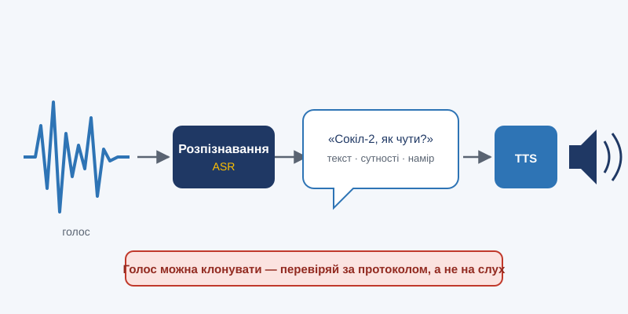
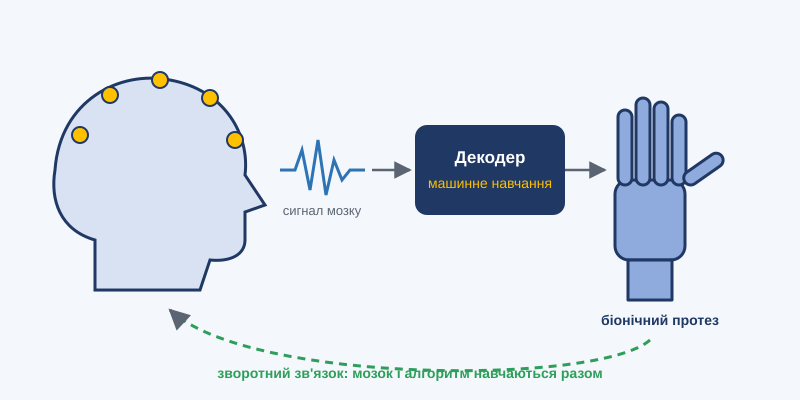
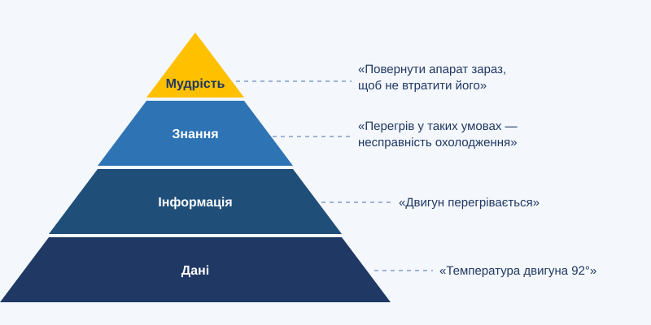
Модуль 3. Застосування когнітивних технологій
Мета модуля: ознайомити курсантів з практичним застосуванням когнітивних технологій в освіті, медицині, обороні, бізнесі та науці, а також з пов'язаними ризиками.
Обсяг: 8 годин (4 заняття).
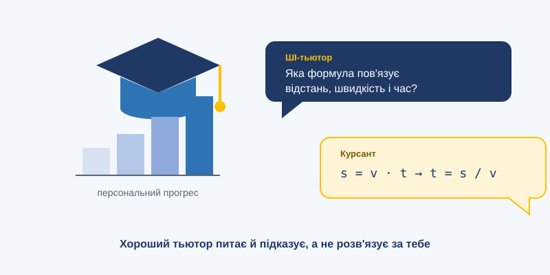
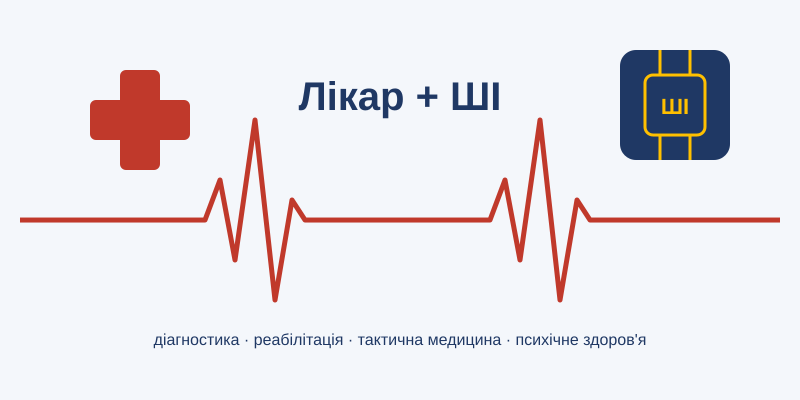
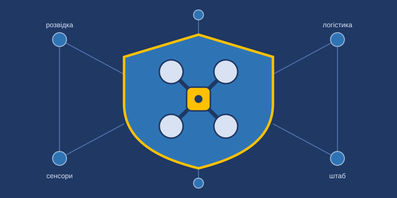
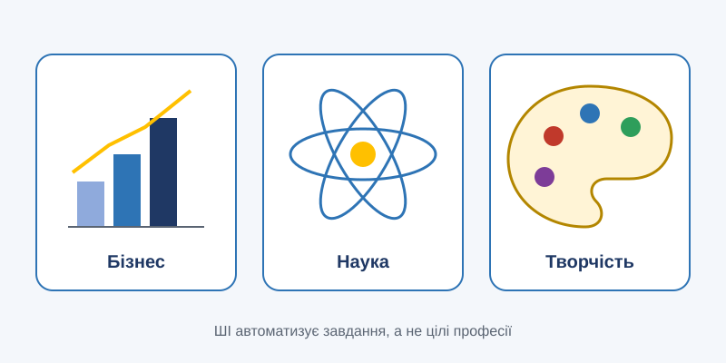
Модуль 4. Людина і машина
Мета модуля: сформувати в курсантів зрілу позицію щодо співпраці з ШІ: посилювати власні можливості без втрати навичок, діяти етично та відповідально, протидіяти загрозам.
Обсяг: 6 годин (3 заняття).


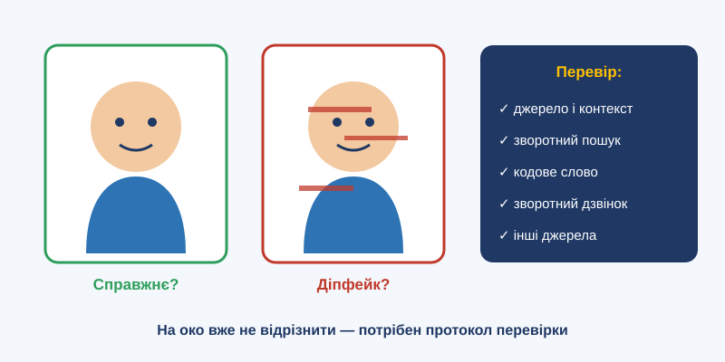
Модуль 5. Майбутнє і практика
Мета модуля: ознайомити курсантів з тенденціями розвитку когнітивних технологій, закріпити практичні навички роботи з ШІ та перевірити рівень засвоєння курсу.
Обсяг: 6 годин (3 заняття).